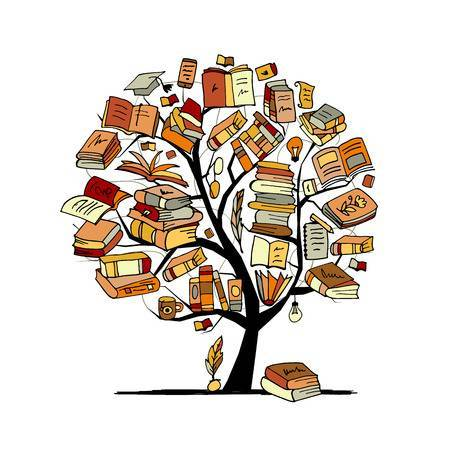

Los estudiantes entenderán la importancia de la comparación literaria para ampliar su comprensión del mundo y desarrollarán habilidades críticas para analizar textos literarios desde diferentes perspectivas.
Se presentarán diferentes enfoques teóricos utilizados en la literatura comparada, como el formalismo, el estructuralismo y el poscolonialismo. Estos enfoques proporcionarán herramientas analíticas para el estudio comparativo de obras literarias.
Esta sección explorará cómo se relacionan y difieren diferentes movimientos literarios a través de ejemplos concretos. Se utilizarán presentaciones interactivas para comparar dos movimientos literarios relevantes.
En esta sección, se explorará cómo las obras literarias reflejan y comentan aspectos culturales y sociales de sus respectivas épocas y contextos. Se presentará un informe sobre la influencia de factores culturales y sociales en la producción literaria.
Se resumirán los temas principales tratados en el curso y se proporcionará un espacio para que los estudiantes reflexionen sobre lo aprendido y cómo pueden aplicar los conceptos de literatura comparada en su propio análisis literario.
Se recopilarán recursos adicionales para aquellos interesados en profundizar en el tema, junto con una lista de lecturas recomendadas y bibliografía consultada para el curso.